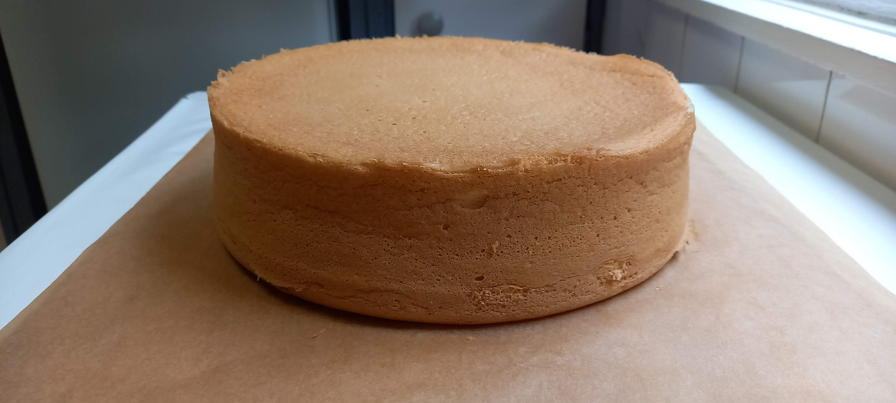

Piskóta
A torta piskóta egy klasszikus alaprecept, aminek az elkészítése biztosan sikerülni fog neked is. A legfontosabb a sütésben az alapanyagok nagyjából pontos kimérése (Nem baj ha 12.00 dkg cukor helyett 12.30 dkg) A piskóta hűlésével együtt kb 2-3 óra alatt kész is lesz
A piskóta világszerte népszerű, Európából származó sütemény, mely tojásból, lisztből és cukorból készül, könnyű tésztájú, melynek ruganyos, könnyed állagát a felvert tojásfehérje biztosítja.
A piskótát a nemzetközi (francia) gasztronómiában savoyai tésztának (Gâteau de Savoie) nevezik, melyet a hagyomány szerint VI. Amadé savoyai gróf (1334 - 1383) cukrásza készített el elsőként.

Hozzávalók
- 8 db tojás
- 16 dkg cukor
- 16 dkg liszt
Elkészítés
- A 26 centis sütőformát bőven vajazza és lisztezze ki
- Rakjon bele 2 dkg cukrot a fehérjébe és verje fel de vigyázzon hogy ne legyen túl kemény a hab mert akkor a sütés után összeesik a piskóta
- Ezután a maradék cukrot rakja a sárgájába és verje habosra
- Rakjon egy kicsi fehérjét a sárgájába és keverje ki
- Utána óvatosa keverje bele az összes fehérjét és a lisztet apránként adagolva óvatosan keverje be
- A tésztát öntse a sütőformába
- Egy 150°C fokra előmelegített süsse kb 25-30 percig